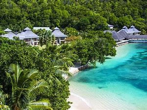
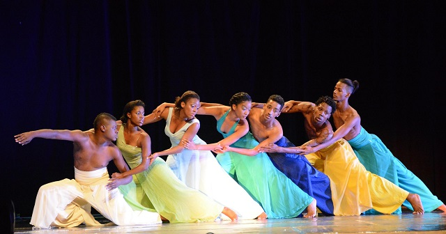
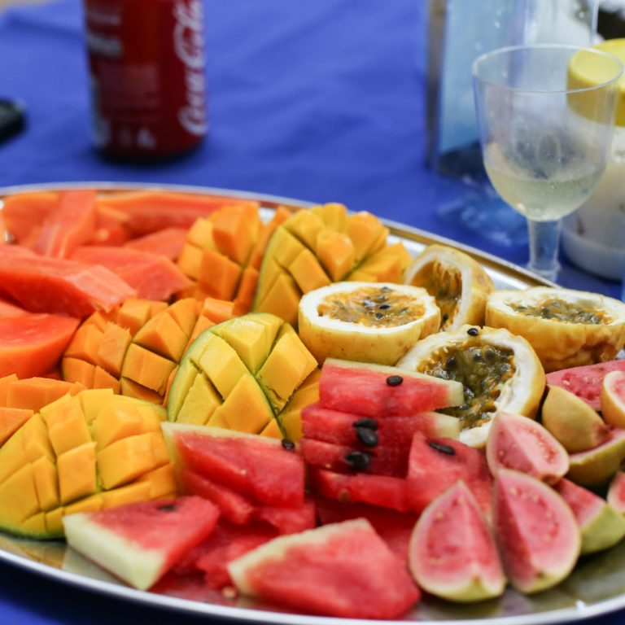

Seychelles, une destination de rêve L'archipel des Seychelles compte 115 îles qui se trouvent au cœur de l'océan Indien. Une des plus belles destinations dans le monde, la plupart des îles sont soit en granite soit d’origines coralliennes. Les îles abritent des plages de sable blanc qui sont parsemées de villas de luxe et chambres d'hôtes de charme niché sous les cocotiers, la plupart des logements sont respectueux de l'environnement, construits avec des matériaux naturels avec un confort de grande classe et des services impeccables.

LA DIGUE
La Digue est la troisième île la plus peuplée des Seychelles, et la quatrième plus grande par zone terrestre de Praslin et à l’ouest de l’île Felicite. En taille, c’est la quatrième plus grande île granitique des Seychelles après Mahé, Praslin et Silhouette Island. Elle compte 2 800 habitants, qui vivent pour la plupart dans les villages de la côte ouest de La Passe (reliés par ferry à Praslin et Mahé)et à La Réunion. Il n’y a pas d’aéroport sur La Digue, donc pour s’y rendre à partir d’un pays étranger, il faut prendre l’avion pour Victoria et continuer en ferry, généralement via Praslin. Il a une superficie de 10,08 km², ce qui le rend relativement facile à parcourir en vélo ou à pied.
LA PRASLIN
Praslin est la deuxième plus grande île (38,5 km2)des Seychelles intérieures,située à 44 km au nord-est de Mahé en mer de Somalie. Praslin compte environ 7 533 habitants et comprend deux districts administratifs : Baie Sainte Anne et Grand' Anse. Les principales agglomérations sont la Baie Ste Anne, l’Anse Volbert et la Grand’Anse. Il a été nommé Île de Palmes par l’explorateur Lazare Picault en 1744. Pendant ce temps, il a été utilisé comme un refuge par les pirates et les marchands arabes. En 1768, il a été rebaptisé Praslin en l’honneur Français diplomate césar Gabriel de Choiseul, duc de Praslin. Praslin est connu comme une destination touristique avec plusieurs hôtels et stations balnéaires, ainsi que d’un certain nombre de plages telles que l’Anse Lazio et l’Anse Georgette.
LA DANSE
La moutia est la danse traditionelle des Seychelles, accompagné de chants avec des rythmes d’origine africaine et malgache. Le sega est une autre danse très populaire, sur laquelle il est impossible de ne pas se dehancher. Le Kanmtole, une danse importée de l’étranger, fait partie de la culture Seychelloise, avec des violons et des accordéons. On retrouve entre-autres des groupes de hip hop, reggea et modern jazz. Pays aux multiples talents !